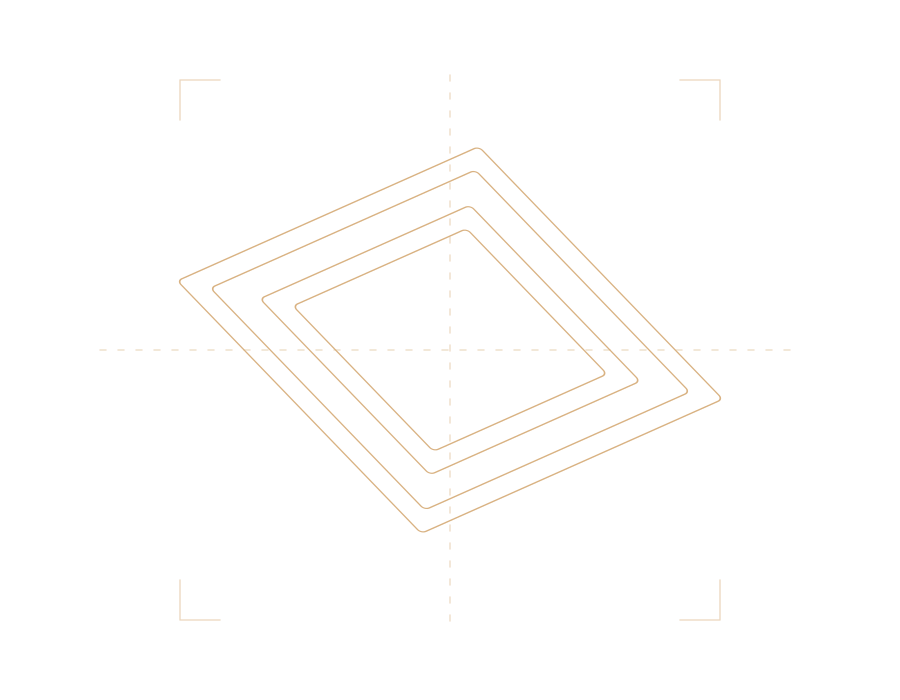
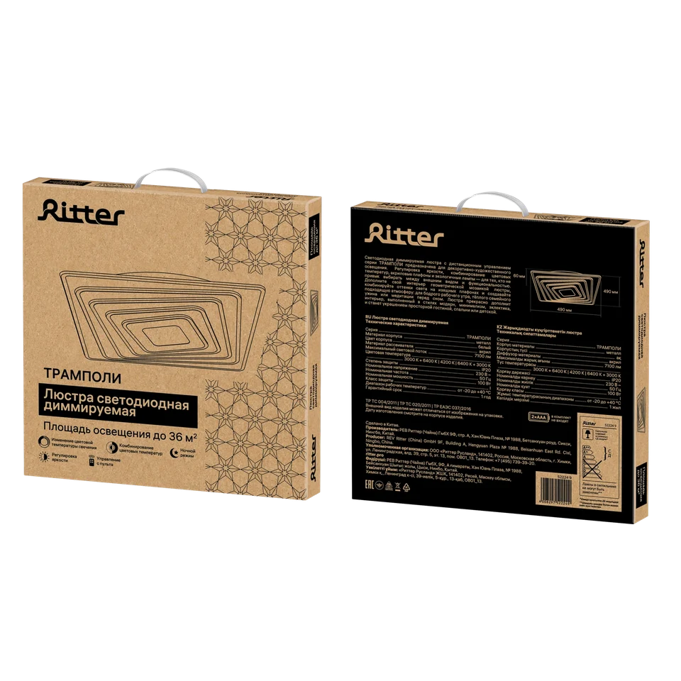
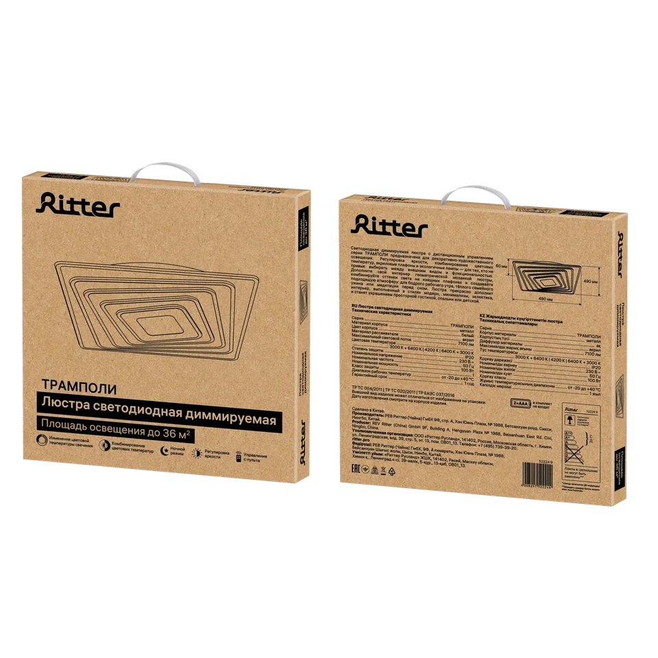
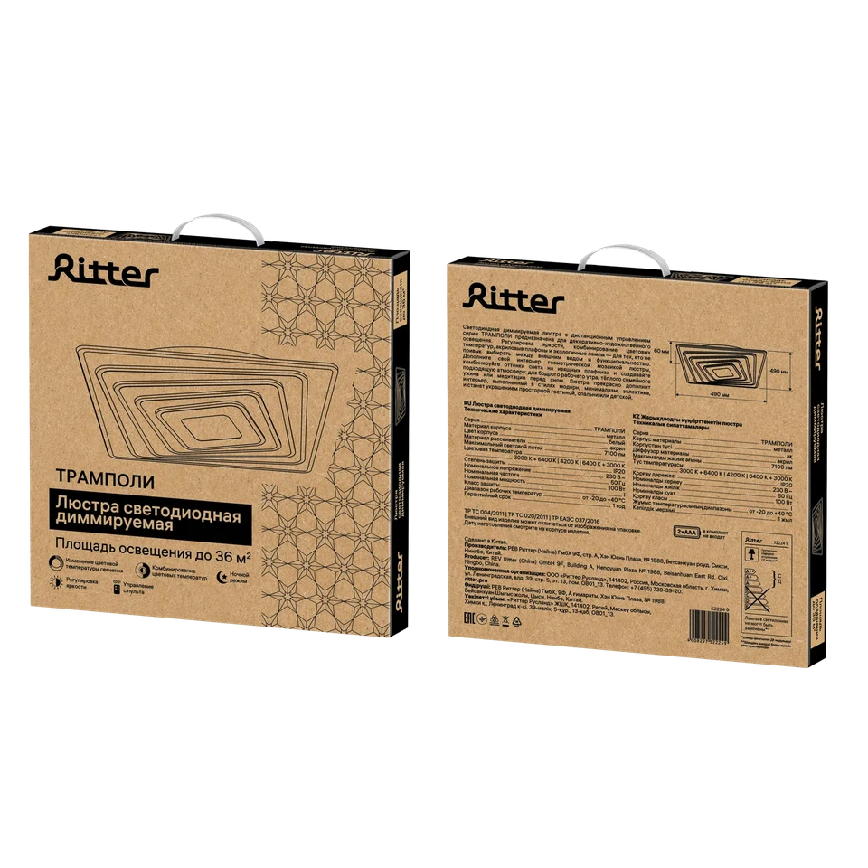
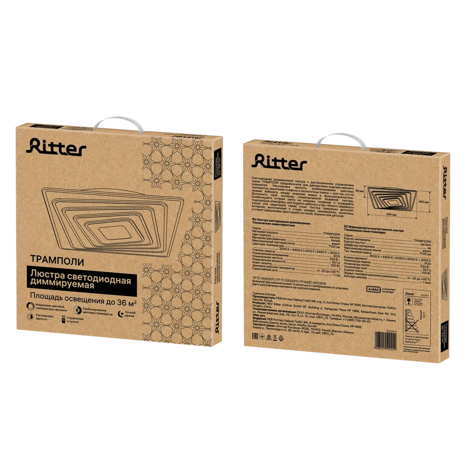
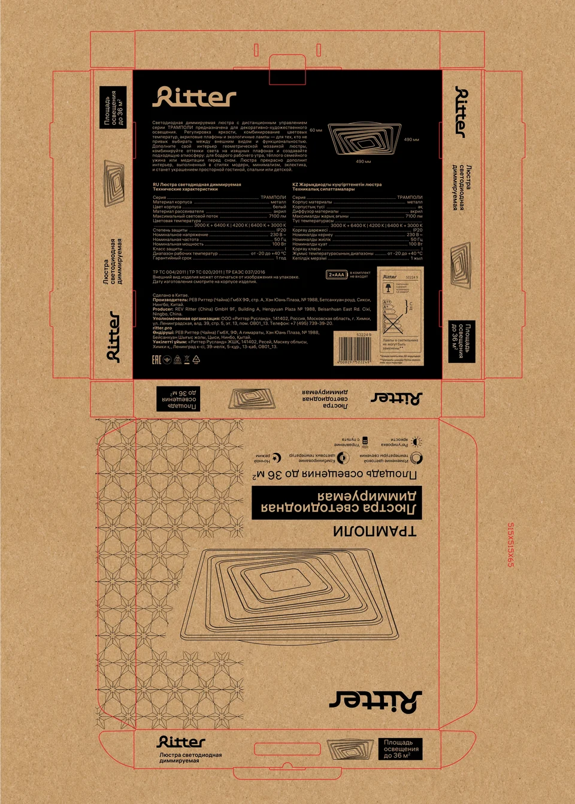
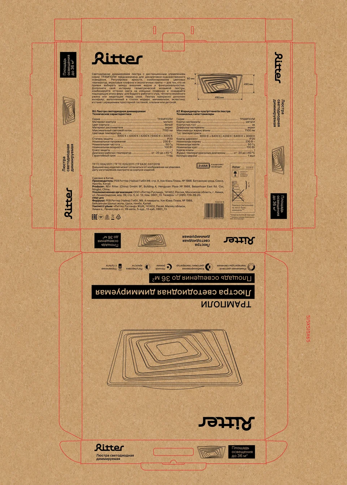
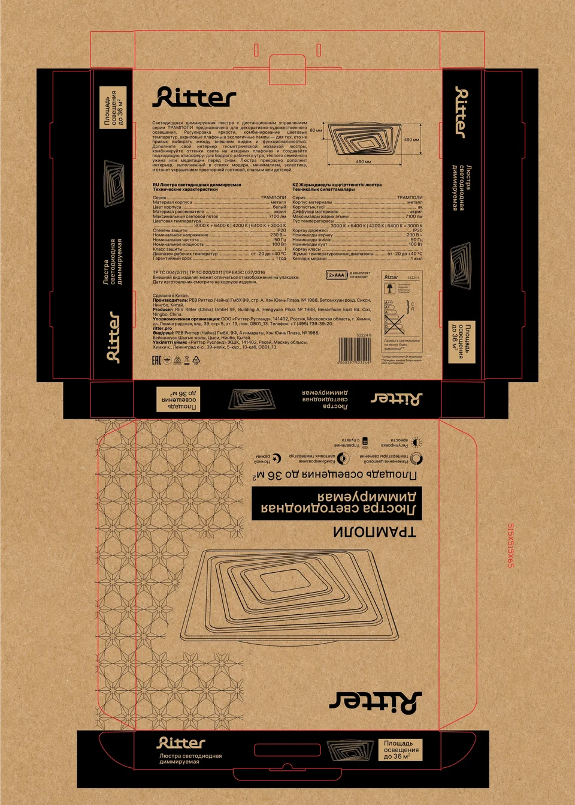
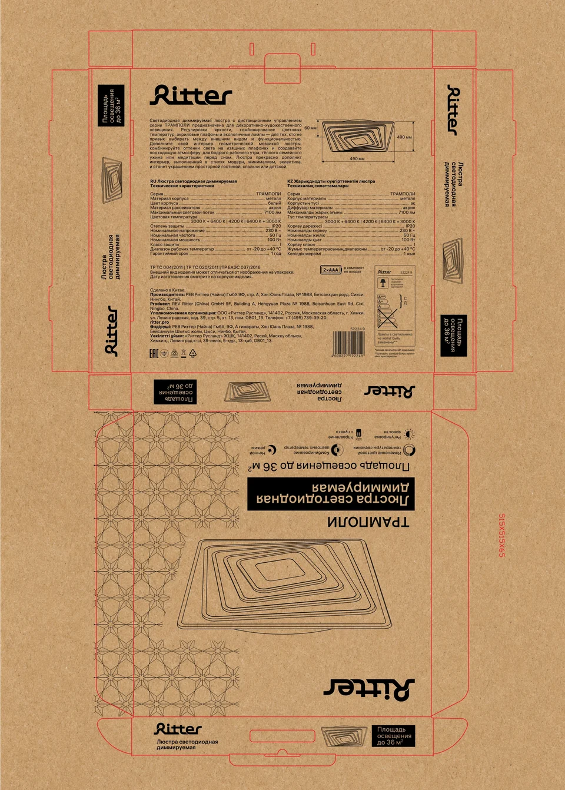

Ritter / 03
ТРАМПОЛИ / серия
Крафт, чертёж и четыре композиционных решения.


ВИЗУАЛЬНАЯ ИДЕЯДизайн,
Дизайн,
собранный в объём.
Природный тон картона и чёрная линейная графика создают сдержанную, техническую подачу. Форма люстры становится основой и для рисунка, и для геометрического паттерна.
Четыре варианта показывают поиск баланса между паттерном, свободным пространством и плотностью информации. Внутри кейса можно сравнить лицевую и оборотную стороны, а затем рассмотреть каждую развёртку.
- Автор дизайна
- Полина Никулина
- Направление
- Упаковка · графика · вёрстка
- Бренд
- Ritter
ОБЪЁМ / РАКУРСЫ / ВАРИАНТЫ



КОНСТРУКЦИЯ / РАЗВЁРТКИ
От плоскости
к предмету.



